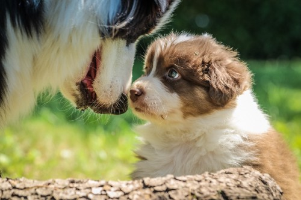
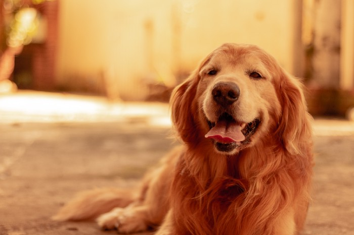
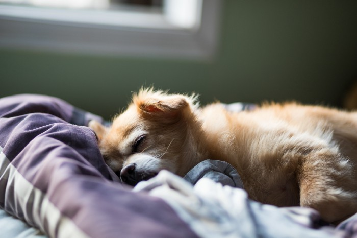
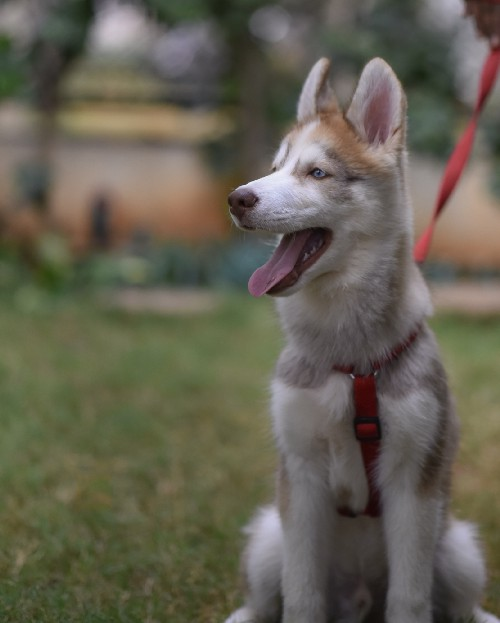

I thought I knew exactly what I was getting into when we brought home our new puppy. I have been around dogs my entire life, and we raised 5 puppies in our family while I was growing up. I’ve also volunteered in multiple shelters and fostered dogs here and there.
When taking our puppy out and about, strangers would see us with the happily-clumsy mess of fur and ask, "Is this your first puppy?"
I had a Shaun growing up, too. His name was Volk (the Russian word for wolf), a black-and-tan german shepherd with sparkling black eyes. I remember nights of camping out in the backyard and waking up to sounds of him treading in circles around our tent, ever the loyal watchman.
Before we got our puppy, I knew having a dog was expensive, but I told myself we’d do things on the cheap side: get the bare minimum of toys, no going to classes, find the cheapest vet we can get away with and still have a healthy dog.
After bringing the dog home, however, you start to see the importance of mental occupation. Would you rather your dog chew on your coffee table, your hand, or a chew toy?
Puppies have a socialization window that ends at 14 weeks of age, by which time you should have introduced your puppy to anything you want her to be able to encounter with confidence in life, the most important being people.
